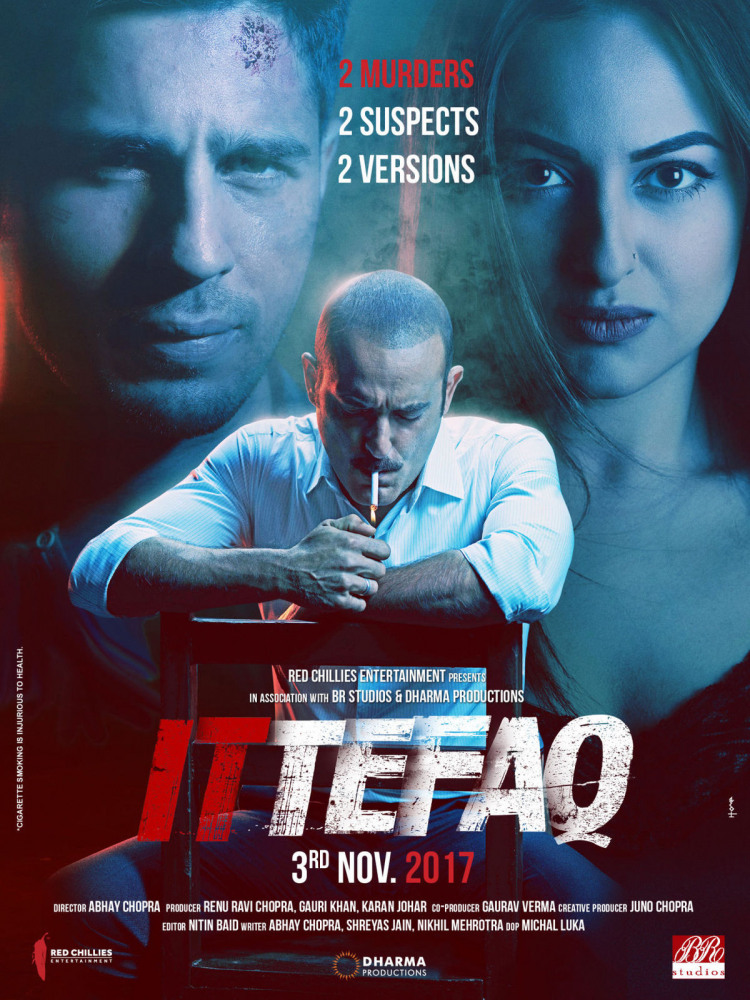
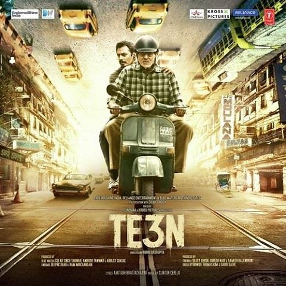
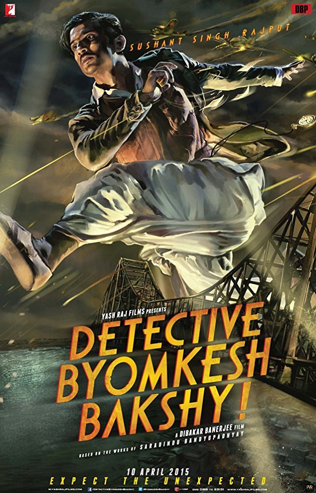

5: Ittefaq
Ratings : 🌟 7.2
Genre :MysteryThriller
Release Date : 3 November 2017
Watch-Time : 1h 45min.
Director : Abhay Chopra
Starring : Sidharth Malhotra, Sonakshi Sinha, Akshaye Khanna
Box-Office : ₹475.50 crore
Storyline:
Vikram Sethi (Sidharth Malhotra) is an acclaimed British writer of Indian descent. On the launch of his third book in Mumbai, he finds his publisher wife Katherine dead in their hotel room. The police suspect him so he flees by car. As the cops give chase, his car overturns and he escapes with injuries, taking shelter in a nearby apartment. Maya (Sonakshi Sinha), a young housewife who lives there, spots a police car outside and rushes there for help.
The police find Vikram next to the body of her lawyer husband, Shekhar, who has been murdered. They also find burnt photographs in the trash. Dev Verma (Akshaye Khanna), an officer investigating the double murder, interrogates Vikram and Maya.
4: Te3n
Ratings : 🌟 7.3
Genre : MysteryDramaThriller
Release Date : 10 June 2016
Watch-Time : 2h 16min.
Director : Ribhu Dasgupta
Starring : Amitabh Bachchan, Nawazuddin Siddiqui, Vidya Balan, Sabyasachi Chakraborty, Padmavati Rao
Box-Office : ₹323.1 million
Storyline:
John Biswas is a broken man. His life was destroyed when his precious granddaughter was kidnapped and murdered. Likewise, Martin Das, the investigating police officer, was so shaken by the case that he quit the force and turned to the priesthood. Now, eight years later, a young boy is kidnapped and police detective Sarita Sarkar sees similarities in the two cases. As a trail of clues leads John into the past, Fr. Martin and Sarita race to save the young boy.
3: Detective Byomkesh Bakshy!
Ratings : 🌟 7.6
Genre : ActionCrimeDramaMystery
Release Date : 3 April 2015
Watch-Time : 2h 19min.
Director : Dibakar Banerjee
Starring : Sushant Singh Rajput, Anand Tiwari, Neeraj Kabi
Box-Office : ₹43 crore
Storyline:
"CALCUTTA 1943 A WAR - A MYSTERY - and A DETECTIVE" Detective Byomkesh Bakshy is based on the early exploits of India's first true-blue detective, created by Bengali bestseller writer Saradindu Bandyopadhyay. Directed by Dibakar Banerjee, the film is set in the Second World War torn Calcutta during the 1940s and follows the first adventure of Byomkesh Bakshy (Sushant Singh Rajput), fresh out of college, as he pits himself against an evil genius who is out to destroy the world. Using his wits against the most villainous arch criminal the world has seen, in a world of murder, international political intrigue and seduction.
2: Kahaani

Ratings : 🌟 8.1
Genre : MysteryThriller
Release Date : 9 March 2012
Watch-Time : 2h 2min.
Director : Sujoy Ghosh
Starring : Vidya Balan, Parambrata Chatterjee, Nawazuddin Siddiqui, Indraneil Sengupta, Saswata Chatterjee
Box-Office : ₹1.04 billion
Storyline:
Kolkata is abuzz with the preparations for the annual Durga Puja festival, as seven months pregnant Vidya Bagchi steps off the airplane from London. Her first stop is the local police station to file a missing person report. Weeks ago, her husband Arnab arrived in India for a job assignment. The first two weeks, they talked daily on the phone, and then without explanation, his calls stopped. Everywhere Vidya turns, no one can remember Arnab. There is no trace of him at the guest house or his workplace. But Vidya will not give up her search. Somewhere in Kolkata she will discover the dangerous truth.
1: Drishyam
Ratings : 🌟 8.2
Genre : CrimeDramaMystery>
Release Date : 31 July 2015
Watch-Time : 2h 43min.
Director : Nishikant Kamat
Starring : Ajay Devgn, Tabu, Shriya Saran, Ishita Dutta, Mrunal Jadhav, Rishab Chadha
Box-Office : ₹1104 million
Storyline:
Vijay Salgaonkar runs a cable TV network in a remote and hilly village of Goa. He lives a happy life with his wife Nandini and two daughters. A 4th grade dropout & an orphan, Vijay has worked his way towards success with his sheer hard-work & street smartness in order to provide for his family who mean the world to him. A man of few means & needs; Vijay believes life is to be lived simplistically - his wife, while she loves him devoutly, wants Vijay's thrifty & miserly behavior to end and wants the world for her family. If there's one thing that Vijay cannot live without, it is his passion for watching films. Such is his 'filmy' obsession that he doesn't mind staying up all night at his office binging on TV movies! In a bizarre turn of events; a teenage boy goes missing; he is the son of a headstrong & no-nonsense cop; IG Meera Deshmukh and the Salgaonkar family is the prime suspect! Will a humble & middle class man, be able to protect his family from oppression of the powerful?